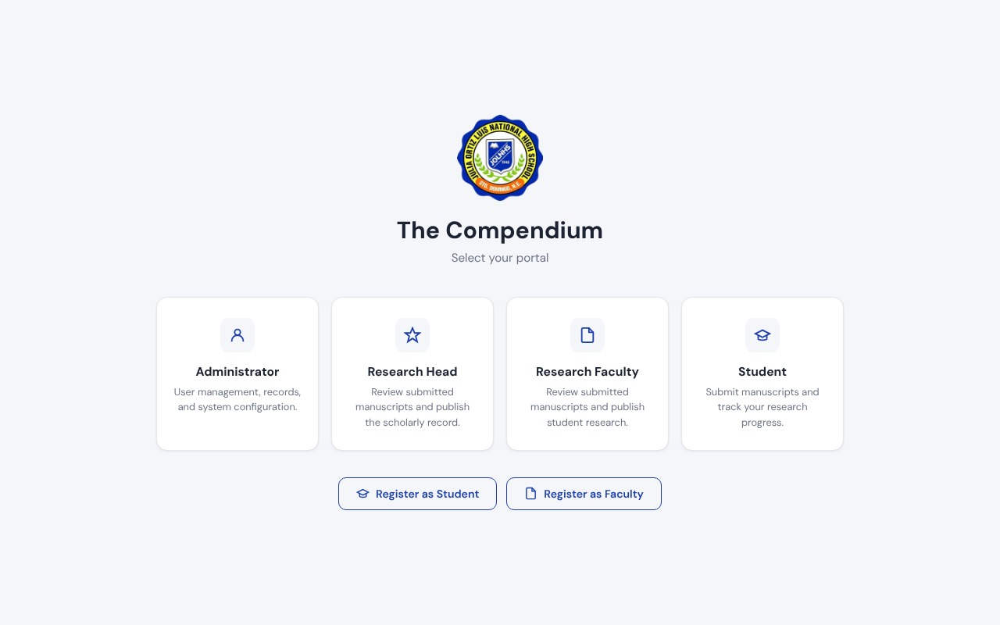

The Compendium
Capstone Designer
A web-based platform for storing, organizing, searching, and accessing academic manuscripts in one centralized repository.
A collection of web apps, mobile systems, and UI/UX designs I've designed, built, and optimized.

A web-based platform for storing, organizing, searching, and accessing academic manuscripts in one centralized repository.